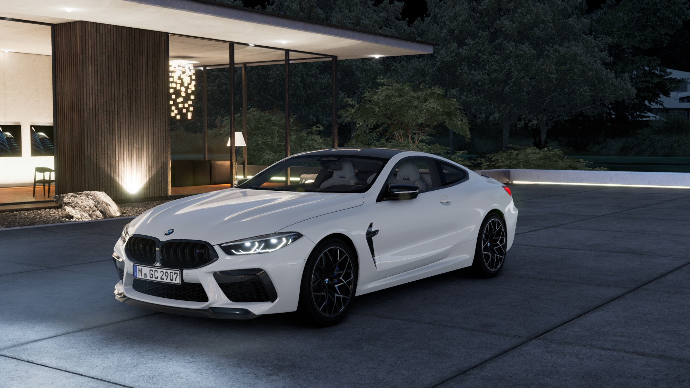

Fahrzeug Konfigurator Multiplayer
Erweiterung eines Konfigurators um einen Mehrspieler-Modus
Unreal Engine

Während meiner Zeit bei meiner ehemaligen Firma übernahm ich die Rolle des Lead-Entwicklers in einem Projekt für einen großen deutschen Autohersteller.
Das Ziel dieses Projekts bestand darin, eine bereits existierende Fahrzeugkonfigurationssoftware um einen Mehrspielermodus zu erweitern. Dies geschah während des Hypes um das Metaverse.
Genauer gesagt sollte die Konfigurationssoftware, die bis dahin vor allem direkt beim Händler eingesetzt wurde, in die Cloud überführt werden, damit ein Verkäufer Verkaufsgespräche in Zukunft auch online durchführen kann. Ein oder mehrere Kunden sollten über einen Einladungslink einer Online-Sitzung beitreten können, um dort das Fahrzeug zu betrachten und sich mit dem Verkäufer zu unterhalten.
Dargestellt werden die Teilnehmer online als Ready-Player-Me Avatare. Nutzer können dadurch ihre eigenen Avatare erstellen. Für den VoiceChat wurde das Odin-Plugin integriert.
Es wurden zwei Modi integriert: Ein 'Free-Mode', in dem man sich wie in einem Third-/First-Person-Shooter durch die Szene bewegen kann, und ein 'Guided-Mode', in dem der Verkäufer den Kunden durch die Szene führt.
Interaktionen sind ebenfalls ähnlich wie in einem Computerspiel möglich. Türen lassen sich öffnen, Animationen abspielen, und man kann sich mit dem Avatar ins Auto setzen.
Die Umsetzung des Projekts war sehr komplex, da der existierende Quellcode nicht auf Multiplayer ausgelegt war. Des Weiteren besteht der Konfigurator nicht nur aus einer Unreal-Engine-App, sondern auch aus einem Python-Backend, das die Unreal-App als Frontend verwendet.
Ich war an der Entwicklung sämtlicher Features beteiligt. An den meisten Stellen wurde C++ für die Logik verwendet, und Blueprint-Scripting wurde dort eingesetzt, wo es sinnvoll war.
Alles in allem war es ein sehr anspruchsvolles Projekt, bei dem ich in kurzer Zeit extrem viel gelernt habe. Voraussichtlich soll das Produkt Anfang 2024 live gehen.